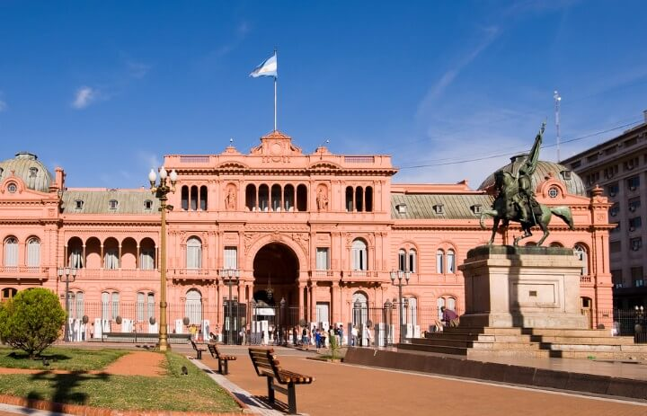
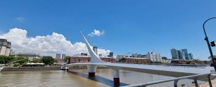
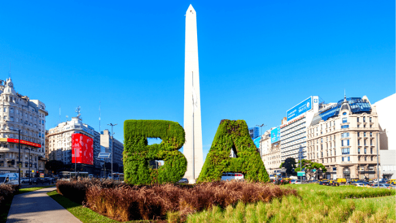
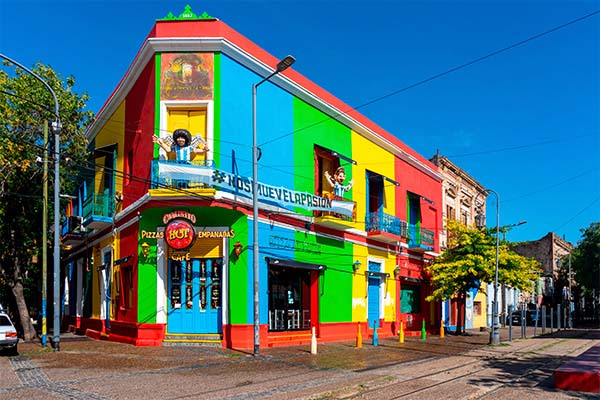
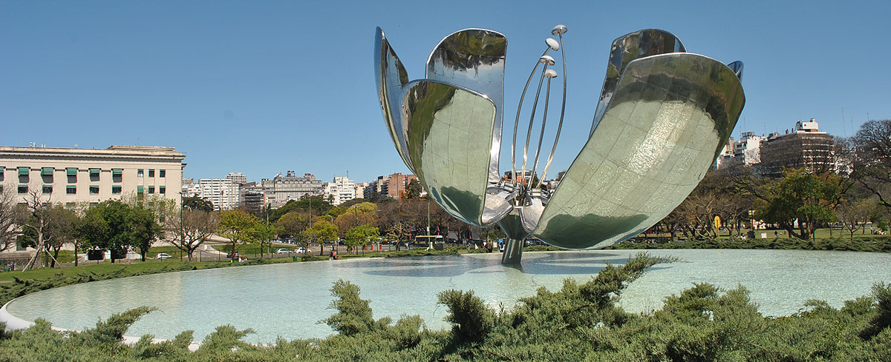
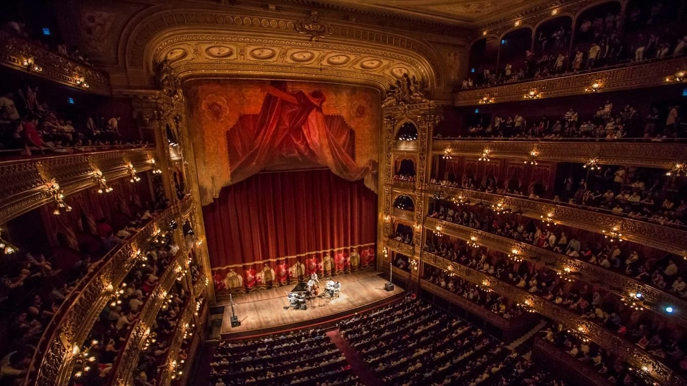

Casa Rosada
La histórica sede del Poder Ejecutivo Nacional y uno de los edificios más representativos de Argentina, ubicada frente a Plaza de Mayo.
Alojarte en Loitel Hoteles significa estar cerca de algunos de los lugares más emblemáticos de la Ciudad de Buenos Aires. Viví la historia, la cultura y la gastronomía a pocos minutos de tu habitación.

La histórica sede del Poder Ejecutivo Nacional y uno de los edificios más representativos de Argentina, ubicada frente a Plaza de Mayo.

El barrio más moderno de Buenos Aires, reconocido por sus restaurantes, paseos costeros, arquitectura contemporánea y el Puente de la Mujer.

El monumento más famoso de la ciudad y uno de los principales símbolos de Buenos Aires, ubicado sobre la Avenida 9 de Julio.

Un barrio lleno de historia, arte y tradición, famoso por Caminito, sus coloridas fachadas y la pasión futbolera que lo caracteriza.

La icónica escultura de Recoleta cuyos pétalos se abren y cierran con la luz del sol, convirtiéndose en una de las postales más fotografiadas de la ciudad.

Considerado uno de los teatros líricos más importantes del mundo, famoso por su arquitectura, acústica y prestigiosas producciones.